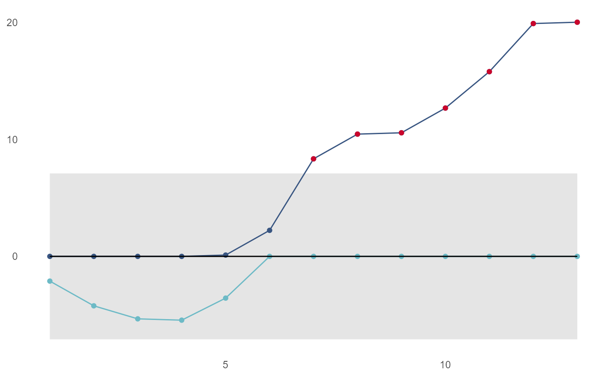

cusum_control_plot
cusum_control_plot( df, xvar, show_below = FALSE, pos_col = "#385581", centre_col = "black", neg_col = "#6dbac6", highlight_col = "#c9052c", facet_var = NULL, facet_scales = "free_y", scale_type = NULL, datebreaks = NULL, title_text = NULL, ... )
| df | input data frame generated by cusum_control function |
|---|---|
| xvar | the variable on the x axis, typically an obervation number or date/time |
| show_below | whether to highlight points below the LCL, default is FALSE |
| pos_col | line and point colour for positive values |
| centre_col | line colour for centre line |
| neg_col | line nd point colour for negative values |
| highlight_col |
|
| facet_var |
|
| facet_scales | defaults to "free_y", but any of the usual ggplot2 facet values can be supplied e.g. "fixed" or "free_x" |
| scale_type | if you need a date or datetime scale, specify either "date" or "datetime" here. Otherwise, leave as NULL and ggplot2 will pick an appropriate scale for you |
| datebreaks | a character string specifying the breaks as text e.g "2 days" or "3 weeks". See ggplot2 date_breaks for further details |
| title_text | optional title for chart |
| ... | further arguments passed on to ggplot2 |
ggplot2 object suited for further amendments if required.
test_vec3 <- c(1,1,2,3,5,7,11,7,5,7,8,9,5) controls <- cusum_control(test_vec3, target = 4) cusum_control_plot(controls, xvar = obs) 